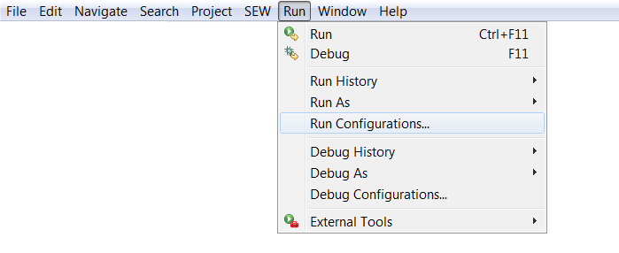
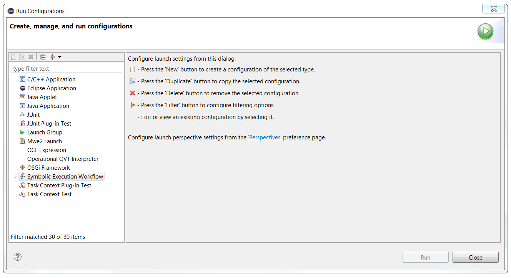
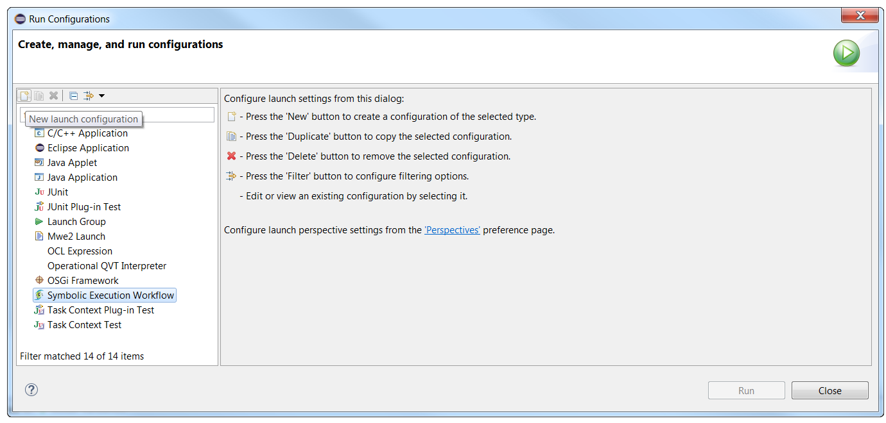
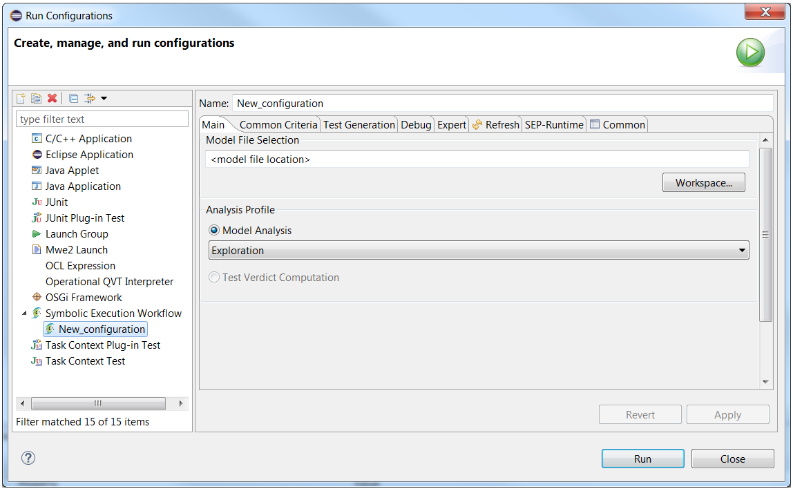

The EFM Project uses Eclipse's "Run Configuration" dialog for the production and exploitation of ".favm" precompiled Symbolic Execution Workflows.
This feature is accessible through Eclipse's menu bar as shown below :
The "Run Configurations" dialog can be seen below. As you can see on the left list, several types of Configurations can be managed (the list depends on your installation of Eclipse). Among those types you will find the "Symbolic Execution Workflow" configuration.
In the following, we'll see how to manage SEW configurations.
Press the "New" button while having selected "Symbolic Execution Workflow" on the left list to create a new SEW configuration :
The dialog then becomes the following :
The different tabs allow the user to configure different aspects of the SEW configuration. In the following, we'll document :